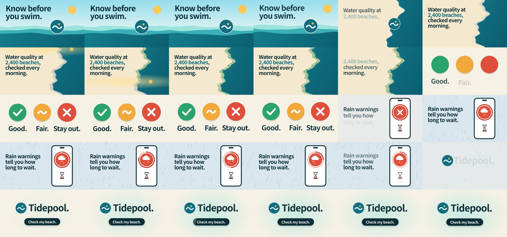

echris6/motion-video-kit: test run, 2026-10-11
The same brief for every skill: a 15-second promo for a made-up app, five fixed lines of on-screen copy, 1920 x 1080 at 30 frames per second. Claude Code (Claude Opus 5.5) made it with the skill in a throwaway sandbox with no API keys for video, image or voice models. 21.8 minutes; sound: no. All results · The brief · How it is checked
The fullest picture here, with drawn scenes and a phone mock-up; it took 21.8 minutes.
The four checks
| Renders to a playable file | pass | H.264 |
|---|---|---|
| Length, size and frame rate as asked | pass | 15.0 s, 1920x1080, 30.0 fps |
| All five lines readable | pass | 5 of 5 |
| The picture moves | pass | 3% of sampled frame pairs held still |
Frames sampled twice a second

How it was made (the session's closing message)
I made the Tidepool video with the installed `business-motion-film` skill. It needed no paid models or API keys. The final file is H.264, 1920×1080, 30fps and exactly 15.0s long. **What's on screen:** the five lines of copy appear exactly as written and in order, with no other text, taglines, numbers or logos. The phone screen only shows the rating disc and icons. - **0–1.6s, "Know before you swim.":** a bright beach. The brand disc floats on the water. - **1.6–5.2s, "Water quality at 2,400 beaches, checked every morning.":** the sea rises into a coastline map. The disc lands on the coast as a pin. A morning light band sweeps down the map and turns 2,400 grey dots into rating colours. - **5.2–7.9s, "Good. Fair. Stay out.":** three beaches lift off the map and become three large discs, one rating each. - **7.9–11.4s, "Rain warnings tell you how long to wait.":** in the rain, the red disc docks into a phone with a draining countdown ring and an hourglass. - **11.3–15s, "Tidepool. Check my beach.":** the disc flips to teal and becomes the logo, next to the wordmark and a button reading "Check my beach." **How I followed the skill:** - I wrote a brief and a storyboard, and a separate reviewer checked the storyboard. - I then ran four review rounds on the full video, each by a fresh reviewer. - Video r4 got a SHIP verdict, with two optional fixes of a few frames each, which I didn't make. - Measured checks: the only near-still stretch is about 1.0s on the end card, which the skill allows. A frame rendered out of order came out identical. **Where I departed from the skill or a reviewer:** - **No audio.** The brief makes music optional, and the skill's sound rules rule out the code-generated sounds I could have made here. - **No "concept film" label.** The skill normally adds one, but your brief forbids extra sentences, and there's no AI imagery to label. - **No flip to "Good" after the rain countdown.** A reviewer suggested it, but it would imply the water clears on a timer, which the brief doesn't say. - **30fps, not the skill's 60fps.** Your brief asks for 30fps. The project is in `~/work/project`: the editable page `index.html`, the renderer `tools/render.mjs`, the brief, the storyboard, the review reports in `review/`, `LEDGER.md` and earlier renders. `~/work/output` also has a poster frame and a contact sheet next to the video. DELIVERABLE: ~/work/output/video.mp4